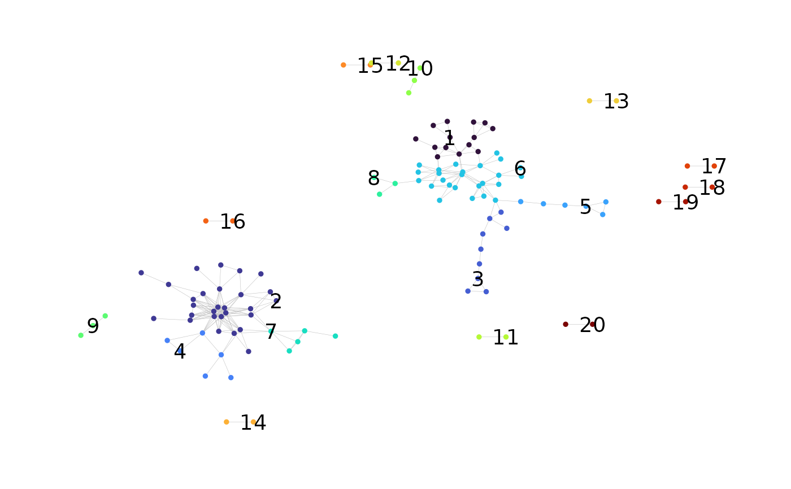

Label Clusters in a Network Graph Plot
addClusterLabels.RdGiven a graph plot and metadata for a network where clustering analysis has been performed, labels clusters in the plot with their cluster IDs. The user can specify a cluster-level property by which to rank the clusters, labeling only those clusters above a specified rank.
Usage
addClusterLabels(
plot,
net,
top_n_clusters = 20,
cluster_id_col = "cluster_id",
criterion = "node_count",
size = 5,
color = "black",
greatest_values = TRUE)Arguments
- plot
A
ggraphobject containing the network graph plot.- net
A list containing data frames named
node_dataandcluster_datawith node-level and cluster-level network properties, such as that returned bybuildRepSeqNetworkwhen called withcluster_stats = TRUE.- top_n_clusters
A positive integer specifying the number of clusters to label. Those with the highest rank according to the
criterionargument will be labeled.- cluster_id_col
The column name of the cluster ID variable within
net$node_data. Note that fornet$cluster_data, the variable is always assumed to becluster_id.- criterion
A column name of
net$cluster_dataspecifying a cluster-level network property by which to rank the clusters. The property should be quantitative for the ranking to be meaningful. SeegetClusterStatsfor a list of properties. The default is"node_size".- size
The font size of the cluster ID labels. Passed to the
sizeargument ofgeom_node_text.- color
The color of the cluster ID labels. Passed to the
colorargument ofgeom_node_text.- greatest_values
Logical. Controls whether clusters are ranked according to the greatest or least values of the property specified by the
criterionargument. IfTRUE, clusters with greater values will be ranked above those with lower values, thereby receiving a higher priority to be labeled.
Value
A ggraph object containing the original plot annotated
with the cluster ID labels.
References
Hai Yang, Jason Cham, Brian Neal, Zenghua Fan, Tao He and Li Zhang. (2023). NAIR: Network Analysis of Immune Repertoire. Frontiers in Immunology, vol. 14. doi: 10.3389/fimmu.2023.1181825
Author
Brian Neal (Brian.Neal@ucsf.edu)
Examples
toy_data <- simulateToyData()
network <- buildRepSeqNetwork(
toy_data,
seq_col = "CloneSeq",
node_stats = TRUE,
cluster_stats = TRUE,
color_nodes_by = "transitivity",
color_scheme = "plasma-1",
size_nodes_by = "degree",
node_size_limits = c(0.5, 1.5),
print_plots = FALSE,
output_dir = NULL
)
#> Input data contains 200 rows.
#> Removing sequences with length fewer than 3 characters... Done. 200 rows remaining.
#> Computing network edges based on a max hamming distance of 1... Done.
#> Network contains 122 nodes (after removing isolated nodes).
#> Computing node-level network statistics... Done.
#> Computing cluster membership within the network... Done.
#> Computing statistics for the 20 clusters in the network... Done.
#> Generating graph plot with nodes colored by transitivity... Done.
# Label two largest clusters
addClusterLabels(
plot = network$plots$transitivity,
net = network,
top_n_clusters = 2,
criterion = "node_count" # (the default)
)
#> Warning: Removed 120 rows containing missing values (`geom_text()`).
